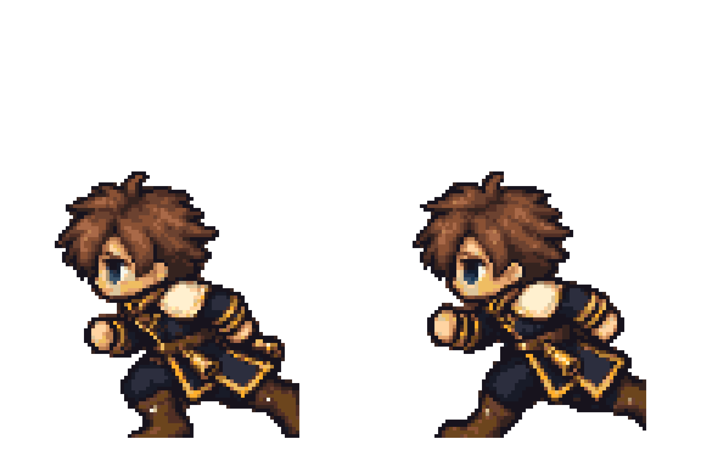
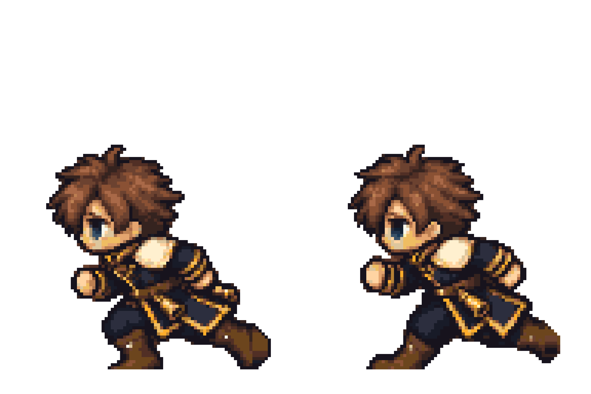

K-133 주인공 달리기 발
왼쪽은 현재 게임 시트, 오른쪽은 수정본입니다. 위에서 세 번째 줄의 1·2번 칸에서 잘린 뒤쪽 부츠를 이어 그렸습니다. 두 영상은 같은 프레임을 동시에 표시합니다.
수정 전
수정 후
1·2번 칸 확대 비교
각 이미지는 원본 픽셀을 4배로 확대한 것입니다.
수정 전

수정 후

왼쪽은 현재 게임 시트, 오른쪽은 수정본입니다. 위에서 세 번째 줄의 1·2번 칸에서 잘린 뒤쪽 부츠를 이어 그렸습니다. 두 영상은 같은 프레임을 동시에 표시합니다.
각 이미지는 원본 픽셀을 4배로 확대한 것입니다.

